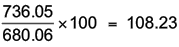
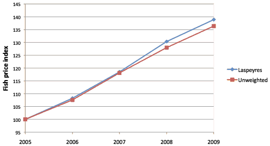
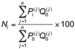
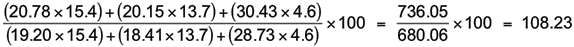

Taking account of quantities
An unweighted price index treats each item in the basket equally. For a price index, this is usually equivalent to assuming that a consumer purchases the same amount of each item. In practice this is usually not the case and so a weighted aggregate price index weights the price of each item by the quantity.
There are two ways of doing this.
The Laspeyres index is simpler in that only one set of quantities are needed — the quantities of items in the base period.
The Paasche index takes account of variations in consumption patterns over time. For example, there may be a trend for consumers to use margarine instead of butter between 2000 and 2010. The Laspeyres index for dairy products in 2010 is based on out-of-date consumption patterns from 2000 whereas the Paasche index for 2010 is based on the current consumption of the items.
We will only consider the Laspeyres index here.
Fish prices in New Zealand
Suppose that the average quantities of each type of fish purchased per capita in 2005 were 15.4kg of Tarakihi, 13.7kg of Gurnard, and 4.6kg of Snapper.
| Average retail price of fish ($/kg) | ||||||
|---|---|---|---|---|---|---|
| Consumption | 2005 | 2006 | 2007 | 2008 | 2009 | |
| Tarakihi | 15.4 kg | 19.20 | 20.78 | 22.77 | 25.43 | 26.67 |
| Gurnard | 13.7 kg | 18.41 | 20.15 | 21.93 | 24.32 | 26.42 |
| Snapper | 4.6 kg | 28.73 | 30.43 | 33.67 | 35.16 | 37.40 |
The total money ($) spent on fish by an average consumer in 2005 was:
15.4 × 19.20 + 13.7 × 18.41 + 4.6 × 28.73 = 680.06
If the same consumption occurred in 2006, the total amount spent on fish would be:
15.4 × 20.78 + 13.7 × 20.15 + 4.6 × 30.43 = 736.05
The table below shows the expenditures per capita on fish for each year (assuming that consumption remains at the levels in 2005).
| $ per capita spent on fish | ||||
|---|---|---|---|---|
| 2005 | 2006 | 2007 | 2008 | 2009 |
| 680.06 | 736.05 | 805.98 | 886.54 | 944.71 |
The Laspeyres index is a simple price index applied to these totals. For example, the Laspeyres index for 2006 is

Applying this to each year in turn gives the values in the table below.
| Laspeyres fish price index | ||||
|---|---|---|---|---|
| 2005 | 2006 | 2007 | 2008 | 2009 |
| 100 | 108.23 | 118.52 | 130.36 | 138.92 |
The Laspeyres index reflects the fact that smaller quantities of snapper were purchased in 2005 compared to the other two varieties (possibly because of price resistance) and so the snapper price receives less weight. Using this index it can be concluded that fish prices were 30.4% higher in 2008 than they were in 2005.
Comparison of Simple and Laspeyres indices
The diagram below shows changes to both the Unweighted and Laspeyres indices from 2005 to 2009.

Since relatively little Snapper was bought in 2005, the Laspeyres index is mostly influenced by changes to the price of Tarakihi and Gurnard. (The Unweighted index is equally influenced by all three fish types.) The percentage price increase of Tarakihi and Gurnard was higher than that of Snapper and the Laspeyres index reflects this.
Formula for Laspeyres index
You will probably find it easiest to evaluate the Laspeyres index from a table of total expenditures. However, there is an equivalent mathematical formula that can be used to define the index.

where Q0(j) denote the quantity of the j-th item in the basket at the base time.
Fish prices in New Zealand
Applying the formula for the Laspeyres index to the prices for 2006, we get the same value as before:
